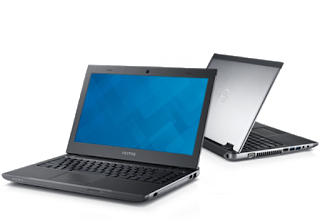
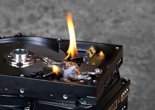
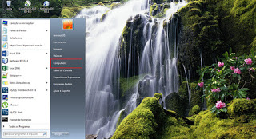
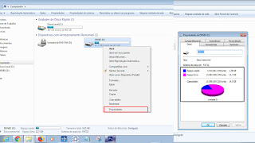
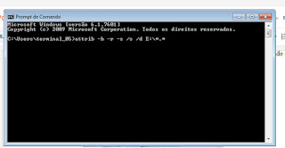

Strelec - Ferramenta que facilita a vida na manutenção de computadores.
Fala galera, Quando iniciei começando formatar computador apanhei bastante, e olha que só formatava por curiosidade, pois não trabalhava com manutenção na época.
Primeiro, eu fazia backup inserindo o HD externo direto no notebook que poderia estar infectado, já que eu não conhecia outras formas, e quando estagiei em uma empresa de manutenção de computador o técnico me mostrou um super programa (Para quem não conhecia e não sabia de outras opções, foi a coisa mais linda haha), que poderia entrar no sistema e fazer o backup sem precisar criar problemas no meu pendrive.
Ai vocês podem falar, ahhhhh mas você poderia simplesmente pegar um pendrive ou mídia fisica com o ubuntu instalado e colocar para rodar pela midia e poderia fazer o backup. E é nessa parte que eu achei o strelec lindo pois vem montando com um sistema linux com vários programas de manutenção instalado nele, como programa de fazer testes em hd, programas para verificar aquecimento de processador,o ghost para fazer a clonagem de HD e muito mais. Quem não conhece é uma ferramenta maravilhosa.
Sayro Digital
No link acima do sayrodigital, Vocês conseguem fazer o download da ferramenta e a instalação na mídia. É muito fácil, só baixar o yumi ou outra ferramenta que monta pen drive bootavel, que vocês conseguem fazer a montagem e inclusive a mídia não precisa ser grande não, eu mesmo utilizo em um pendrive de apenas 4 GB.
Por hoje foi isso pessoal, se tiver qualquer dúvida deixa nos comentários, Hoje foi só uma dica
rápida de uma ferramenta que ajuda muito no dia a dia.
Operating System Not Found - Dell Vostro
Fala Galera, Hoje eu estava mexendo em um notebook que pediram para formatar, e como sempre antes de formatar faço pelo menos o teste de HD, já que fui informado que estava lento o notebook a ponto de não conseguir usar.
Fiz o teste de HD e o mesmo só apresentou um erro de badblock, fiz mais alguns teste como de memória e teste para ver como estava a temperatura e tudo estava na normalidade. quer dizer na normalidade para um core i3 de terceira geração. O notebook em questão que eu estava mexendo era esse Dell Vostro 3460.

Liguei pro cliente e informei que o notebook estava com um badblock no HD, e a formatação não teria garantia já que poderia aguentar um tempo, ou que poderia parar logo logo, que só dependia dele se quisesse que a formatação fosse feita, e ainda assim ele aprovou a formatação, então eu fui e tentei dar boot com o Windows 10. Só que ao colocar o pen drive e selecionar no boot apareceu o Operating System Not Found.
Mas veja bem, ele entrava no Windows normalmente, poderia usar, mesmo lento só que só com quando dava o boot acontecia esse problema. Depois de tentar algumas coisas como tentar fazer um pendrive bootável do Windows 7 para ver se dava certo. fiz o teste de testar sem o HD. E olha que tirar esse HD dá um trabalho danado que me deixou com raiva kkk. Mas ao testar sem o HD ele dava o boot normal. Infelizmente para o cliente vai ser preciso fazer a troca do HD.

Deixando aqui por que não vi muito a solução exata desse problema e quando olhei era só tirar o HD que voltava a dar boot. É isso ai galera, só vim deixa essa mensagem, se tiverem dúvidas deixe uma mensagem aqui. Até logo mais.
Pen Drive com Vírus de atalho, como resolver!
Fala galera, Eu estava com um pen drive para recuperar os arquivos pois o rapaz tinha pegado o vírus que transforma tudo em atalhos, e não conseguia mais acessar. Como já sofri muito com isso resolvi publicar aqui, é uma coisa simples mais que ajuda muito na hora do aperto.

De qualquer forma o primeiro passo é verificar se o pen drive só está com esse vírus de atalho mesmo, ai é só apertar o botão de Windows e clicar em meu computador, que é onde marquei com um quadrado vermelho, ou apertar a tecla Windows junto com a letra E que irá para o mesmo lugar.

Após isso aparecerá o local onde abre o pendrive, quando visualizar o pendrive clica com o botão esquerdo em cima do pendrive e clica com o botão direito em propriedades, irá aparecer as informações sobre quantidade de megas/gigas que está sendo ocupado no pendrive, se o seu estiver sem nada, infelizmente esse método não irá funcionar, porém se estiver com a mesma quantidade de gigas que tinha antes do vírus pegar nessa página tem a solução.

Para fazer esse processo é só abrir o cmd do windows pode apertar o atalho de windows mais a letra R e escrever cmd e dar enter ou apertar a tecla windows e procurar cmd, quando aparecer clicar em cima dele e escrever o comando, ou somente copiar e colar no cmd, lembrando que o colar só funciona se clicar dentro do cmd com o botão esquerdo e e clicar em colar.

Só utilizar o CMD do windows para estar realizando este comando simples attrib -h -r -s /s /d E:\*.* (lembrando que a letra I é a mesma letra do diretório do seu pen drive) que ao terminar de fazer esse comando vai ser criada uma pasta no pendrive com os arquivos dentro. Só fazer a verificação da pasta que está dentro conferindo os arquivos, apagar os atalhos e agradecer a Deus por ter recuperado.

Esse foi só um mini tutorial, para ajudar quem por acaso esteja precisando, qualquer dúvidas deixar o comentário ai que ajudarei no que puder.